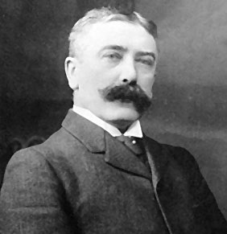
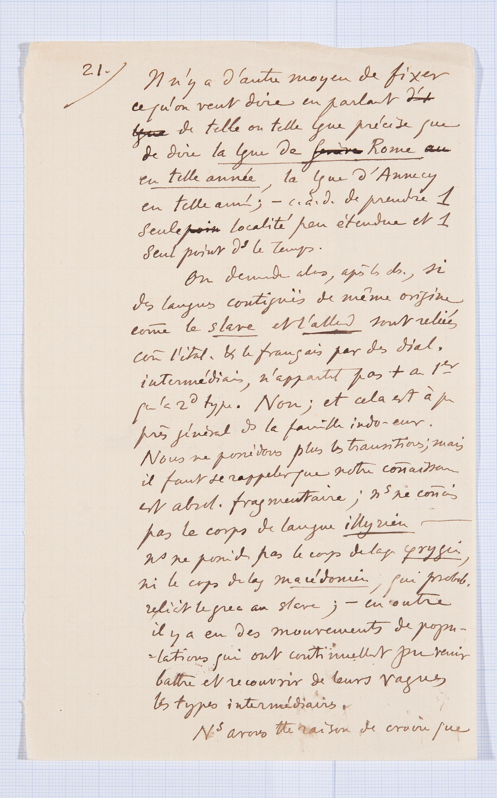
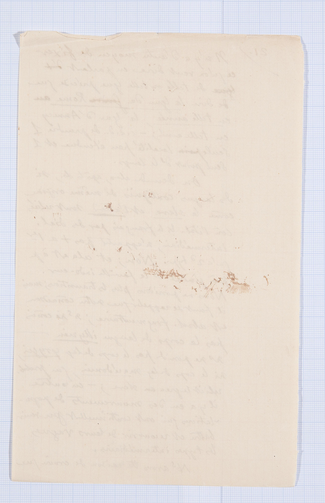
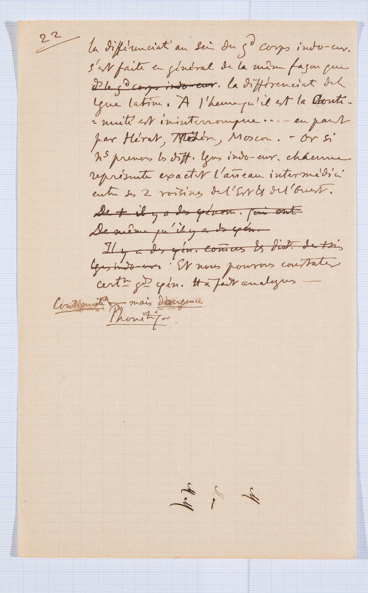
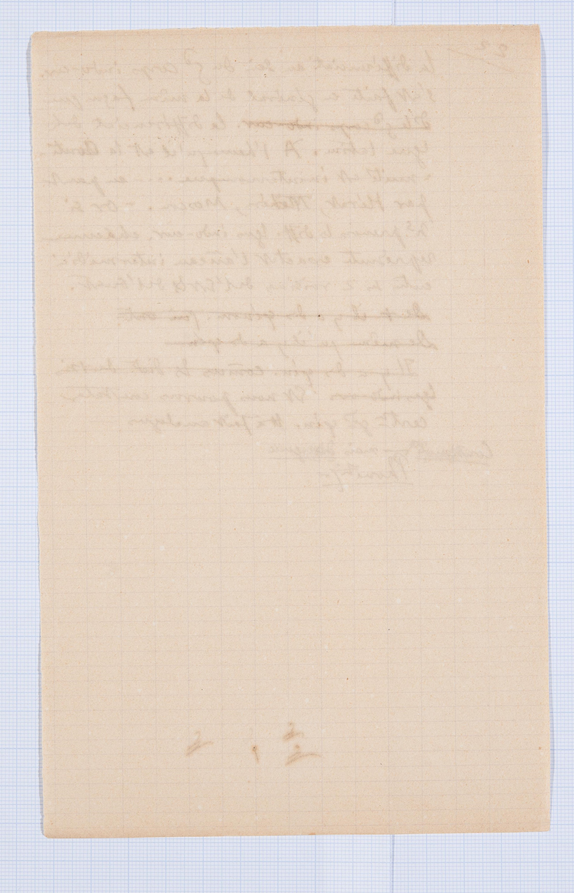

Trois premières conférences à l'Université

Informazioni generali
Autore:
Titolo:
Trois premières conférences à l'Université (cours d'ouverture - nov. 1891)
Documento:
BGE Ms.fr.3951/1.1-3
Lingua:
Francese
Acquisizione:
Repertorio della
Biblioteca di Ginevra,
Svizzera.
Data:
Novembre 1891
Supporto:
Carta
Quantità:
67 pagine + 1 foglio aggiuntivo.
Condizioni:
Le pagine si dimostrano datate ma comunque perfettamente consultabili, dal momento
che i danni riportati non sono influenti per il fine della lettura. Lo stato di conservazione
è generalmente buono.
Metodo di scrittura:
Il testo è stato scritto a mano solo dal suo autore.
Storia editoriale
Appunti di Ferdinand de Saussure, scritti originariamente per alcune conferenze dell'Università di Ginevra. Sono stati poi utilizzati nel novembre 1891 per le prime lezioni del corso di Phonétique du grec et du latin. Sono poi giunte a noi in buone condizioni.

Foglio 21
Trascrizione testo originale
Il n’y a d’autre moyen de fixer ce qu’on veut dire en parlant ? d'un ? langue de telle ou telle langue précise que de dire la langue de Rome? en telle année,; la langue d’Annecy en telle année;. c.à.dC'est-à-dire de prendre 1une seule ? point localité peu étendue et 1un seul point ddans le temps. On demande alors, après ces ob.observations, si des langues contiguës de même origine, comme le slave et l’alle? allemands, sont reliées comme l’ital.italien &et le français par des dial.dialectes intermédiaires, n’appartenant pas +plus au 1erpremier qu’au 2^dsecondsecond type. Non; et cela est à pepeu près général ddans la famille indo-eur.indo-européenne. Nous ne possédons plus les transitions ; mais il faut se rappelerquerappeler que notre conaissa? connaissance est absol.absolumnet fragmentaire ; n^snous ne conais? connaissons pas le corps de langue illyrien,---- n^snous ne po? ponidpossédons pas le corps de laglangue φrygei? phrygien, ni le corps de laglangue macédonien, qui probab.probablement reliait le grec au slave ;- en outre il y a eu des mouvements de popu--lations qui ont continuellement pu venir battre et recouvrir de leurs vagues les types intermédiaires. N^sNous avons ttetoute raison de croire queTraduzione italiana
Non c’è altro mezzo di fissare ciò che si vuol dire parlando di questa o quella lingua precisa che dire la lingua di Roma in quell’anno; la lingua di Annecy in quell’altro. Cioè di prendere una sola località poco estesa e un solo punto nel tempo. Ci si domanda dunque, in seguito a questeosservazioni, se lingue contigue della stessa origine, come lo slavo e il tedesco, sono legate come l’italiano e il francese da dialetti intermedi, che non appartengono al primo tipo più che al secondo. No; e tutto ciò è praticamente generale nella famiglia indoeuropea Noi non possediamo più le transizioni; ma bisogna ricordare che la nostra conoscenza è assolutamente frammentaria: non conosciamo il nucleo centrale dell’illirico; non possediamo il nucleo centrale del frigio, né quello del macedone, che probabilmente collegava il greco allo slavo; inoltre ci sono movimenti di popolazioni che con continuità hanno potuto affacciarsi e ricoprire delle loro onde i tipi intermedi. Abbiamo ogni ragione di credere cheGlossario
Langue,
Lingua:
La langue de Rome en telle année,
La lingua di Roma in quell'anno:
La langue d'Annecy en telle année,
La lingua di Annecy in quell'anno:
localité,
località:
point,
punto:
temps,
tempo:
observations,
osservazioni:
contiguës,
contigue:
origine,
origine:
dialectes intermédiaires,
dialetti intermedi:
type,
tipo:
général,
generale:
famille,
famiglia:
transitions,
transizioni:
connaissance,
conoscenza:
différenciation,
differenziazione:
représente,
rappresenta:
fragmentaire,
frammentaria:
corps,
nucleo:
langue illyrien,
illirico:
langue phrygien,
frigio:
langue macédonien,
macedone:
populations,
popolazioni:
continuellement,
continuità:
langue latine,
lingua latina:
représente,
rappresenta:
anneau intermédiaire,
anello intermedio:
phénomènes,
fenomeni:
analogues,
analoghi:
divergences,
divergenze:
Phonétique,
fonetica:
Bibliografia
- - Cahiers Ferdinand de Saussure, Ginevra, Librairie Droz, 2009
- - Lingua e mente sociale Per una teoria delle istituzioni linguistiche a partire da Saussure e Mead, Acireale, Bonanno Editore, 2006
- - Corso di linguistica generale, introduzione, traduzione e commento di Tullio De Mauro, Roma, Editori Laterza, 1976